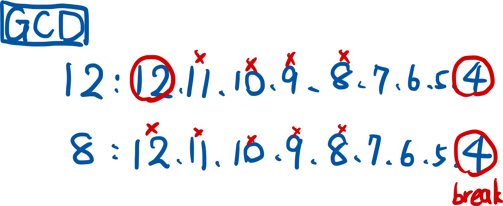
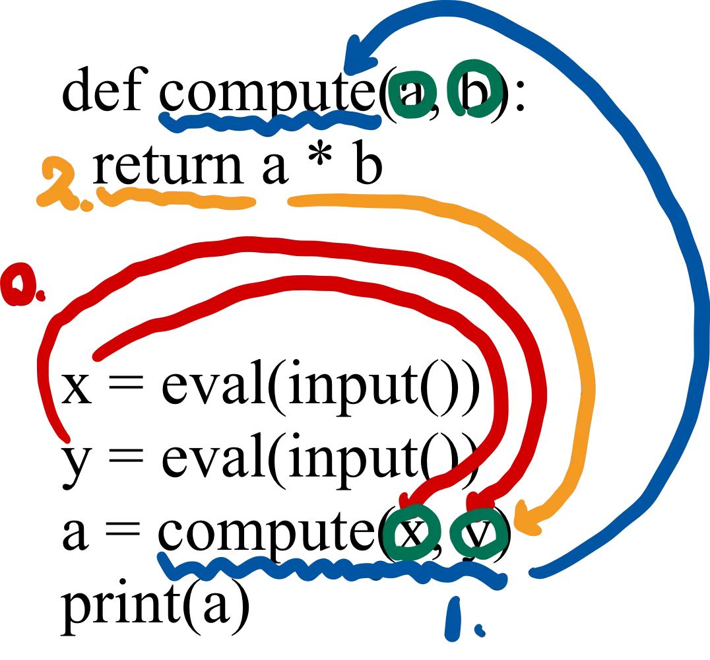

num = int(input()) a0=0 a1=1 for i in range(num): print(a0,end=' ') a2=a0+a1 a0=a1 a1=a2
更簡單的解法，利用Python的特性將交換這件事情簡化：
1 2 3 4 5 6
num = int(input()) a0, a1 = 0, 1
for _ in range(num): print(a0, end=' ') a0, a1 = a1, a0 + a1
508
共同公因數從哪個數字開始找都可以，
由後面開始找：由後面開始找，找到可以共同被整除的值就是GCD最大公因數，立即跳出迴圈
由前面開始找：從頭開始找所有共同因數，最後一個是GCD最大公因數

從後面開始找：
1 2 3 4 5 6 7
a, b = eval(input()) gcd = 1 for i inrange(b,0,-1): if a % i == 0and b % i == 0: gcd = i break print(gcd)
從前面開始找：
1 2 3 4 5 6
a, b = eval(input()) gcd = 1 for i inrange(1, b + 1): if a % i == 0and b % i == 0: gcd = i print(gcd)
506
就是國中數學
1 2 3 4 5 6 7 8 9 10
a, b, c = eval(input()), eval(input()), eval(input()) r = b**2 - 4 * a * c if r > 0: ans1 = (-b + r**0.5) / (2 * a) ans2 = (-b - r**0.5) / (2 * a) print(f'{ans1}, {ans2})' elif r == 0: print(f'{-b/(2*a)})' else: print('Your equation has no root.')
502, 504
print(), input(), int()…都是函式，本題組最大用意是要會「自訂函式」。
下圖為自訂一個函式compute() 的方式，compute() 內參數放幾個也是可以自定義的。

1 2 3 4 5 6 7 8
def compute(a, b): return a * b
x = eval(input()) y = eval(input()) a = compute(x, y) print(a)
1 2 3 4 5 6 7
defcompute(x, y): return x**y
a = eval(input()) b = eval(input()) z = compute(a, b) print(z)